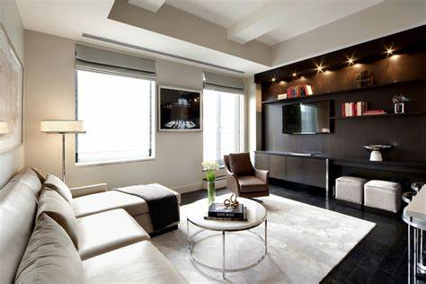
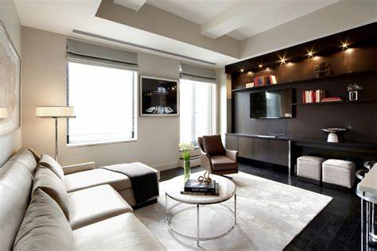
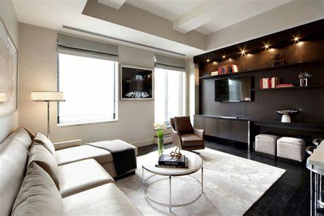

Boobalan is a masterful carpenter whose passion for woodworking is evident in every piece he creates. With years of experience and a profound understanding of both traditional and modern carpentry techniques, Boobalan breathes life into wood. His workshop is a haven of creativity, filled with state-of-the-art machinery and tools, each chosen for its precision and reliability. Boobalan's designs range from elegantly simple to intricately complex, each reflecting his unwavering commitment to quality and innovation. He takes pride in crafting bespoke furniture, architectural elements, and unique wooden art pieces that are not only functional but also aesthetically stunning. His meticulous attention to detail ensures that every joint is seamless, every surface is smooth, and every design is a true masterpiece. For Boobalan, carpentry is not just a profession, but an art form, and his work speaks volumes about his dedication and craftsmanship.

Every nail hammered, every board cut, is a testament to the unyielding hard work and dedication of a skilled carpenter.
9042632628
sathyansanjai007@gmail.com
PAPANASAM ROAD, CHANDRASEKARAPURAM,
VALANGAIMAN TALUK, THIRUVARUR DISTRICT
pincode: 612804